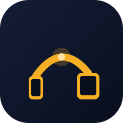
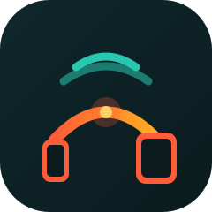
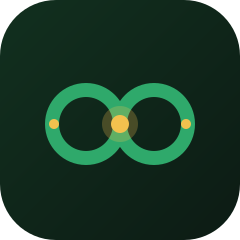

Trois pistes créatives pour le logo et la palette — concept du symbole, couleurs et typographie. Ouvre chaque fichier SVG pour la version vectorielle.

Le téléphone et la télé sont les deux piliers, l'arche est le lien : l'idée de transmission est littérale et lisible dès la petite taille.
#0A0F1E
Surface #151D37
Primaire #F5B025
Secondaire #2E9E6B
Accent #FF8A3D
Erreur #E5484D
Info #4DA6FF
Typo : Bricolage Grotesque (titres) + Inter (texte).

Le pont devient un faisceau d'ondes : le mouvement du cast est au cœur du symbole. Idéal pour un public jeune et un usage « je lance, ça part ».
#0B1B1E
Surface #0F272B
Primaire #FF5C39
Secondaire #FFB020
Accent #27C7B0
Erreur #E5484D
Info #4DA6FF
Typo : Sora (titres) + Inter (texte).

Le vert et l'ambre évoquent une fierté africaine posée, sans folklore : le symbole parle de continuité et de solidité, y compris hors connexion.
#0C1B14
Surface #12301F
Primaire #2FA96B
Secondaire #F2C14E
Accent #E07B39
Erreur #E5484D
Info #4DA6FF
Typo : Manrope (titres) + Inter (texte).